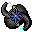

鰻のタリスマン Eel talisman
英語版 CrawlWiki の記事「Eel talisman」(0.34 向け、2026-09-22 版)の翻訳です。原文の著者は編集履歴をご覧ください。
| アワビと真珠で飾られた、奇妙な海の化石だ。着用者の手を、のたうつ一対の電気ウナギに変える。そのウナギで敵を攻撃すると、ときおりつながった標的に電弧を放つ。着用者の体力が危険なほど低くなると、さらに激しい電圧を放つ。 |


変身には4ターン、元に戻るには5ターンかかる。
鰻の手には次の効果がある。
戦闘面の強化
- 放電: 近接攻撃が当たると、50%の確率で電弧が放たれ、つながった複数の敵のあいだを伝っていく。
- 電撃ダメージ: 1d25(スキル12)から 1d44(スキル20)まで伸びる。
- 激しい放電: HP が最大 HP の40%まで下がると、ウナギが激しく放電し、自分から2マス以内のつながった相手すべてに、ふだんの電撃の2倍のダメージを与える。この効果は、HP が全快するまで再び発動しない。仲間にも当たることがある。
- 徒手格闘のボーナス: +3(スキル12)から +7(スキル20)まで伸びる。
耐性
- rElec
制限
鰻の手に必要な変身術スキルの最低値は12で、それを下回るとHP が減るうえ、徒手格闘のボーナスと電撃ダメージも小さくなる。スキルの効果は20で頭打ちになる。
変更履歴
| 変身 | |
|---|---|
| タリスマン | 第1段階: 針化 • 巻物 第2段階: スカラベ • 胞子 • ヤク • メデューサ 第3段階: 大口 • 鰻の手 • 蟹 • 人狼 • 大蛇 • 蜘蛛 • 水化 第4段階: 刃の手 • 竜化 • 石像 • 巣 • スフィンクス • 吸血鬼(コウモリ群) 第5段階: 嵐化 • 死霊化 |
| ボーブル | 流転 |
| 不利な変身 | コウモリ • 茸化 • 豚化 • 樹化 • 霧化 • ジェリー |
| 神の力 | 殺戮 |